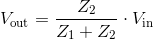
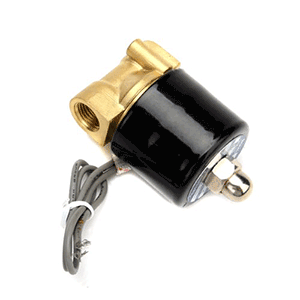
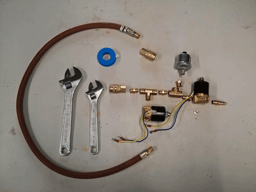

Launcher Control System
Goals
The goals for the launcher control system are so far pretty simple:
- Measure the air pressure inside the rocket.
- Pressurize the rocket automatically.
- Launch the rocket automatically.
Plans
This is noderocket, so we know we're going to use nodejs. For the launcher, we decided to use an Arduino based platform running johnny-five for the interface to the hardware. Arduino gives us a series of analog and digital input/output pins which we can use to measure or to turn things on and off.
Measuring Air Pressure
We spent some time looking for an inexpensive, easy to find, pressure sensor that can measure up to about 100 PSI. We found a great fit in the oil pressure sensors in our cars:

An oil pressure sensor varies its electrical resistance in response to the amount of pressure pushing against the sensor. If we can measure the resistance of the pressure sensor we can calculate the pressure pushing against it. In electronics, the way to measure an unknown resistance is to use a voltage divider circuit.

In this case, we will use a known Vin and Z1, we will measure Vout by connecting it to an analog pin on the Arduino, and we can then calculate Z2 using the following equation:

Our Vin will be the +5 V from the Arduino. We need to pick a reasonable Z1. The resistance of the pressure sensor ranges from close to nothing to between 150 and 200 Ω. So we have to balance two needs:
- We want to minimize the current we consume (Ohm's Law: I = V/R), which means we want a high Z1.
- We want to maximize the voltage change as the sensor resistance changes, which means we want a low Z1.
The larger we make Z1, the less of a voltage change we get from a change in resistance on the sensor. The Arduino reads voltage from 0 to 5 V as digital values 0 to 1023, where 0 is 0 V and 1023 is 5 V. This mean that the Arduino reads in increments of 0.00488 V. A Z1 of around 300 Ω will give us a voltage range of 0 V to 2 V, assuming the sensor is 0 Ω at 0 PSI and 200 Ω at 100 PSI. This means we will read pressure in increments of about 0.244 PSI, which is good enough for our rocket launcher. The maximum current we will consume is 16 mA, which isn't great, but we can live with it.
Calculating Pressure From Resistance
The pressure sensor resistance changes close enough to linearly that we're going to use a simple linear equation to determine the pressure from the resistance. We have to determine the parameters of that equation experimentally. Using a digital multimeter we measure the resistance of the sensor at two known pressures, then we determine the slope and y-intercept from those numbers. When I measured the resistance of my sensor I got the following readings:
- At 10 PSI resistance was 22.31648 Ω.
- At 80 PSI resistance was 150.077 Ω
Using amazing algebra skills, we get an equation that looks like this:
psi = (Z2 * 0.5479) - 2.2272;
Pressurizing and Launching
Pressurizing the rocket is just a matter of opening a valve to let pressurized air into the rocket, then closing it again.

We considered several options for triggering the rocket launch. Our current solution uses a pneumatic cylinder to move a piece of material holding the rocket to the launcher. The pneumatic cylinder is powered by air pressure, which is controlled by a valve. So our control circuit for launching the rocket will be the same as the control circuit for pressurizing the rocket.

Controlling the Valves
The air valves operate at 12 V and draw about 1 A when first opened, dropping to a sustained 500 mA or so for as long as they stay open. This is a lot more power than the Arduino can provide. The oil pressure sensor, since it comes from a car, expects to operate in a common ground environment. This means that all of our components should normally be connected to ground, and the valves should be switched on by switching operating voltage of 12 V to them.
We're going to use transistors to do the switching for us. Since we want the valves to be connected to ground and switch on power, we will need to use P channel transistors as the switch to the valve. Since the valve has a relatively high power consumption, we'll need to use high powered transistors, like MOSFETs.
The Arduino digital output pin effectively has three states: low (0 V), high (5 V), and high impedence (no value, like during startup). In order to make sure the valve stays closed unless switched on we want a small NPN transistor between the Arduino and the MOSFET. This transistor will make sure that if the Arduino gives a weak or indeterminate value on the pin, the MOSFET still gets a strong "off" signal. We'll be using this circuit:
{kind=link}
Our LOAD is the air valve. There is what's called a "pull down" resistor on the NPN transistor that makes sure that if the Arduino IO isn't giving a strong value, the NPN input is tied to ground, which turns off an NPN transistor. The P MOSFET has a "pull up" resistor, which does the same thing if the NPN transistor is giving a weak output. A P channel transistor is off if its input is high.
Since our LOAD is a solenoid, which is a type of inductor coil, it will discharge current in a backwards direction when it's turned off. In order to protect the transistors we will include a diode across the load. A diode allows current to flow in only one direction. We will point the diode so that when the transistor turns the valve on, no current will flow through it, but any current created by the valve when it turns off will flow through the diode, protecting the transistor.
Building the Circuits
Parts List
We will create two valve control circuits, and the pressure measurement circuit. We'll need the following parts:
- An Arduino Kit (Uno)
- Arduino Uno
- USB cable
- Breadboard
- plenty of jumper wires
- 6 10k Ω resistors
- 1 270 Ω resistor
- 2 NPN transistors (5 V input)
- 2 P channel MOSFETs (5 V input)
- 2 diodes
- 1 DC barrel jack adapter
- 1 15V (or so) power supply
- 1 CAT6 keystone jack
- about 6 inches of CAT5 or CAT6 cable, preferably solid core (bulk cable is usually solid, patch cables are usually stranded - solid plugs into a breadboard more easily)
In order to make it easy to connect to the valves and sensor, we included a CAT6 keystone jack. The circuit board will be connected to the control assembly (valves and sensor) through a network cable. This makes it easier to set up and tear down the launcher.
WARNINGS
- The direction of the diodes matters. If you put them in backwards you are short circuiting your transistors.
- Don't plug the 15 V into the Arduino power jack. It fits, but it's way too much power. You could damage the Arduino.
- Different transistors may use different pins than the ones in the diagrams/pictures. If you aren't using the same parts listed above, make sure the pins match for base, collector, and emitter (or gate, source, and drain). If they don't match, adjust your wiring accordingly.
Put all together, it should look like this:

And here is a real life version:
{kind=link}
Using a Spark Core

The Spark Core is a small, Arduino compatible board with Wifi built in. It's close to a drop in replacement for the Arduino in our control system circuit, with a couple key differences:
- The Spark Core is a 3.3V system, not a 5V system.
- The data connection is WiFi, not USB.
Dealing with 3.3V
Our circuit is expecting 5V - that's what works best with our transistors. The Spark Core is powered by USB, which is 5V. The Vin pin outputs 5V.
The analog pins can't handle 5V, only 3.3V. That means we need to make sure our pressure sensor never gives the analog pin more than 3.3V. There are two ways to do this:
- Use a 3.3V pin as the power supply to the voltage divider (only the voltage divider).
- Power the voltage divider from 5V, but make sure max that can reach the analog pin is 3.3V or under.
I'm using the first solution, which is easy to adjust for in the software.
Here's the circuit with a spark device:

Connecting without USB
This is mostly handled with a software change. The noderocket-launcher project includes a "spark" branch that has the updates needed to connect to a spark device. Here's what you need to do:
- Register your spark device at https://www.spark.io.
- Prepare the spark device following the instructions for the spark-io project.
- Clone the noderocket-launcher project and switch to the spark branch.
- Find your Spark Access Token at https://www.spark.io/build under the Settings section.
- Find your spark device's Device ID at https://www.spark.io/build under the Cores section.
Start the launcher server using:
node server.js --token <your token> --deviceId <your device id>
Building the Valve Assembly
We need the valves and pressure sensor connected such that:
- We can connect an air pressure source.
- We can connect a rocket launch platform.
- The fill valve controls air into the rocket.
- The pressure sensor senses the air pressure of the rocket.
- The launch valve has pressure when the rocket is ready to launch.
- The launch valve loses pressure when the rocket is launched.
Parts List
We'll need the following parts:
- 2 12 V air valves
- 1 oil pressure sensor
- 1 1/8 NPT female to 1/4 NPT male adapter (comes with the pressure sensor linked)
- 2 Quick connect starter sets
- 2 Female quick connect to 1/4 NPT female
- 2 Male quick connect to 1/4 NPT male
- 2 1/4 NPT tees
- 1 1/4 NPT female coupling
- 3 1/4 NPT male coupling
- 1 1/8 NPT male to 1/4 NPT female coupling
- 1 pneumatic cylinder
- 1-2 foot hose 1/4 NPT male on both ends to connect valve to cylinder
- Electrical tape
- M5 screw to connect the sensor ground to a valve body
- pipe thread tape
- 1 CAT6 keystone jack
- about 6 inches of CAT5 or CAT6 cable, preferably solid core (bulk cable is usually solid, patch cables are usually stranded - solid plugs into a breadboard more easily)

Assemble them as shown in the picture - make sure to apply tape to the threads of each male piece before assembling. Tighten the connections. It should look like this when assembled:

The pneumatic cylinder isn't pictured as it's bolted on to the launch platform. It has a male quick connect and the hose connecting it to the valve has a female quick connect so that the control assembly is removed from the launch platform via two quick connects - one to the rocket fill and the other to the pneumatic cylinder.
And both sides assembled with CAT6 keystone jacks - a network cable completes the connection between the two: